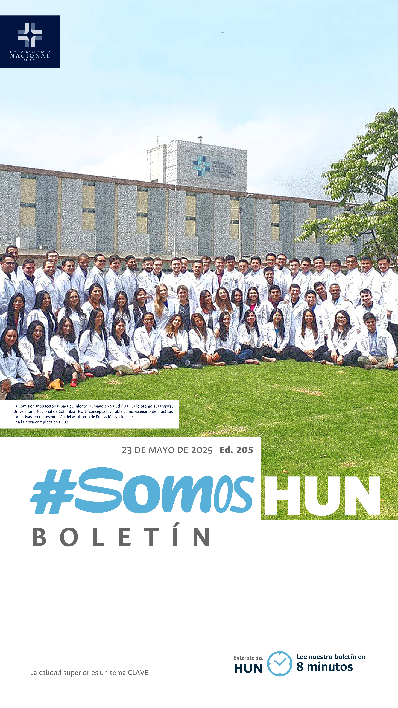
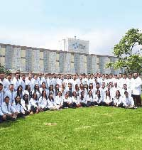
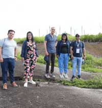
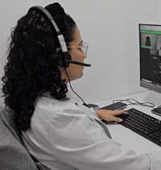
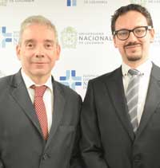
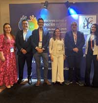
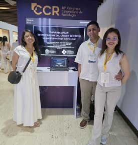
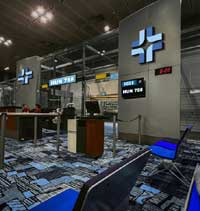

Ver todos los boletines
MINISTERIO DE EDUCACIÓN NOS OTORGÓ CONCEPTO FAVORABLE COMO ESCENARIO DE PRÁCTICAS FORMATIVAS
El Hospital Universitario Nacional de Colombia (HUN) recibió el Concepto de Favorabilidad como escenario de prácticas formativas por parte de la Comisión Intersectorial para el Talento Humano en Salud (CITHS), en representación del Ministerio de Educación Nacional. Este aval certifica que la institución cumple con los estándares exigidos para ofrecer prácticas seguras, pertinentes y de alta calidad en los programas de formación en salud de la UNAL.Leer más

HUN Y NUEVA EPS FORTALECEN MODELO DE TELEMEDICINA DIFERENCIAL EN GUAINÍA
El Hospital Universitario Nacional de Colombia (HUN) y Nueva EPS esperan lograr implementar un modelo de atención en telemedicina diferencial para llegar a más de 20 comunidades de las zonas más apartadas en Guainía, logrando poner en terreno el conocimiento y la experiencia de una institución como el Hospital Universitario de la Universidad Nacional de Colombia.Leer más

CUNDINAMARCA TENDRÁ MÁS ATENCIÓN EN SALUD CON APOYO DE LA UNAL
Desde octubre de 2024 más de 10.000 pacientes de distintos departamentos del país han sido atendidos por el servicio de Telemedicina del HUN. Ahora se busca ampliar esta capacidad a zonas apartadas del centro del país, como parte de un convenio de cooperación entre la Facultad de Medicina de la Universidad Nacional de Colombia (UNAL), el HUN y la Gobernación de Cundinamarca. Leer más

LANZAMIENTO DEL ECBE LEIOMIOMATOSIS
El Hospital Universitario Nacional celebró una jornada muy especial dedicada a los hijos de nuestros colaboradores: el Día de los Niños en el HUN, una actividad pensada para fortalecer los lazos familiares y permitir que los más pequeños conozcan de cerca el lugar donde sus padres desempeñan su labor diaria..Leer más

TRES CASOS DE ÉXITO HUN SE PRESENTAN EN EL VIII FORO DE SOLUCIONES EXITOSAS DE LA ACHC
Con más de 500 asistentes y 86 experiencias seleccionadas, la octava edición del foro reafirma el compromiso de las instituciones de salud con la innovación, la generosidad y la mejora continua.Leer más

RESIDENTES DE RADIOLOGÍA DESTACADOS EN EL 48° CONGRESO COLOMBIANO DE RADIOLOGÍA
Dos equipos de Residentes de la Universidad Nacional de Colombia obtuvieron premios en la categoría de Mejor Exhibición Académica Digital en las áreas de Cardiovascular e Imagen de la Mujer/Ginecología, en el marco de este importante Congreso.Leer más

¿YA LLEGÓ EL ATERRIZAJE DEL VUELO 788 A TU PROCESO?
El Equipo de Mejoramiento Institucional ampliado ha enviado a sus emisarios para que inicie el vuelo 788 en todos los procesos del hospital. Con esta estrategia se divulgan los resultados de la VIII Autoevaluación de Acreditación en los distintos procesos del HUN.Leer más